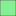
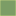
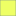
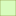
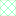

<!DOCTYPE html>
<html lang="en">
  <head>
    <meta charset="utf-8" />
    <meta http-equiv="X-UA-Compatible" content="IE=edge" />
    <meta
      name="viewport"
      content="initial-scale=1,user-scalable=no,maximum-scale=1,width=device-width"
    />
    <meta name="mobile-web-app-capable" content="yes" />
    <meta name="apple-mobile-web-app-capable" content="yes" />
    <link rel="stylesheet" href="css/leaflet.css" />
    <link rel="stylesheet" href="css/qgis2web.css" />
    <link rel="stylesheet" href="css/fontawesome-all.min.css" />
    <style>
      #map {
        width: 790px;
        height: 531px;
      }
    </style>
    <title></title>
  </head>
  <body>
    <div id="map"></div>
    <script src="js/qgis2web_expressions.js"></script>
    <script src="js/leaflet.js"></script>
    <script src="js/leaflet.rotatedMarker.js"></script>
    <script src="js/leaflet.pattern.js"></script>
    <script src="js/leaflet-hash.js"></script>
    <script src="js/Autolinker.min.js"></script>
    <script src="js/rbush.min.js"></script>
    <script src="js/labelgun.min.js"></script>
    <script src="js/labels.js"></script>
    <script src="js/proj4.js"></script>
    <script src="js/proj4leaflet.js"></script>
    <script src="data/_1.js"></script>
    <script src="data/1_2.js"></script>
    <script src="data/1_3.js"></script>
    <script src="data/1_4.js"></script>
    <script src="data/_351_5.js"></script>
    <script>
      var crs = new L.Proj.CRS(
        "EPSG:2039",
        "+proj=tmerc +lat_0=31.7343936111111 +lon_0=35.2045169444444 +k=1.0000067 +x_0=219529.584 +y_0=626907.39 +ellps=GRS80 +towgs84=-48,55,52,0,0,0,0 +units=m +no_defs",
        {
          resolutions: [
            2800,
            1400,
            700,
            350,
            175,
            84,
            42,
            21,
            11.2,
            5.6,
            2.8,
            1.4,
            0.7,
            0.35,
            0.14,
            0.07,
          ],
        }
      );
      var map = L.map("map", {
        crs: crs,
        continuousWorld: false,
        worldCopyJump: false,
        zoomControl: true,
        maxZoom: 8,
        minZoom: 1,
      }).fitBounds([
        [29.26702193806957, 32.88385934044888],
        [33.40269349124044, 40.073150561892405],
      ]);
      var hash = new L.Hash(map);
      map.attributionControl.setPrefix(
        '<a href="https://github.com/tomchadwin/qgis2web" target="_blank">qgis2web</a> &middot; <a href="https://leafletjs.com" title="A JS library for interactive maps">Leaflet</a> &middot; <a href="https://qgis.org">QGIS</a>'
      );
      var autolinker = new Autolinker({
        truncate: { length: 30, location: "smart" },
      });
      var bounds_group = new L.featureGroup([]);
      function setBounds() {}
      map.createPane("pane_OpenStreetMap_0");
      map.getPane("pane_OpenStreetMap_0").style.zIndex = 400;
      var layer_OpenStreetMap_0 = L.tileLayer(
        "https://tile.openstreetmap.org/{z}/{x}/{y}.png",
        {
          pane: "pane_OpenStreetMap_0",
          opacity: 0.8,
          attribution: "",
          minNativeZoom: 0,
          maxNativeZoom: 19,
        }
      );
      layer_OpenStreetMap_0;
      map.addLayer(layer_OpenStreetMap_0);
      function pop__1(feature, layer) {
        var popupContent =
          '<table>\
                    <tr>\
                        <th scope="row">תפקיד</th>\
                        <td>' +
          (feature.properties["function_"] !== null
            ? autolinker.link(feature.properties["function_"].toLocaleString())
            : "") +
          '</td>\
                    </tr>\
                    <tr>\
                        <th scope="row">שם</th>\
                        <td>' +
          (feature.properties["corr_name"] !== null
            ? autolinker.link(feature.properties["corr_name"].toLocaleString())
            : "") +
          '</td>\
                    </tr>\
                    <tr>\
                        <th scope="row">אזור</th>\
                        <td>' +
          (feature.properties["region"] !== null
            ? autolinker.link(feature.properties["region"].toLocaleString())
            : "") +
          "</td>\
                    </tr>\
                </table>";
        layer.bindPopup(popupContent, { maxHeight: 400 });
      }

      function style__1_0() {
        return {
          pane: "pane__1",
          opacity: 1,
          color: "rgba(139,217,98,1.0)",
          dashArray: "",
          lineCap: "butt",
          lineJoin: "miter",
          weight: 1.0,
          fill: true,
          fillOpacity: 1,
          fillColor: "rgba(116,255,174,1.0)",
          interactive: true,
        };
      }
      map.createPane("pane__1");
      map.getPane("pane__1").style.zIndex = 401;
      map.getPane("pane__1").style["mix-blend-mode"] = "normal";
      var layer__1 = new L.geoJson(json__1, {
        attribution: "",
        interactive: true,
        dataVar: "json__1",
        layerName: "layer__1",
        pane: "pane__1",
        onEachFeature: pop__1,
        style: style__1_0,
      });
      bounds_group.addLayer(layer__1);
      map.addLayer(layer__1);
      function pop_1_2(feature, layer) {
        var popupContent =
          '<table>\
                    <tr>\
                        <th scope="row">סוג</th>\
                        <td>' +
          (feature.properties["MAVAT_NAME"] !== null
            ? autolinker.link(feature.properties["MAVAT_NAME"].toLocaleString())
            : "") +
          '</td>\
                    </tr>\
                    <tr>\
                        <th scope="row">שם</th>\
                        <td>' +
          (feature.properties["NAME"] !== null
            ? autolinker.link(feature.properties["NAME"].toLocaleString())
            : "") +
          "</td>\
                    </tr>\
                </table>";
        layer.bindPopup(popupContent, { maxHeight: 400 });
      }

      function style_1_2_0(feature) {
        switch (String(feature.properties["MAVAT_NAME"])) {
          case "יער טבעי":
            return {
              pane: "pane_1_2",
              opacity: 1,
              color: "rgba(175,195,122,0.8)",
              dashArray: "",
              lineCap: "butt",
              lineJoin: "miter",
              weight: 1.0,
              fill: true,
              fillOpacity: 1,
              fillColor: "rgba(124,157,102,0.8)",
              interactive: true,
            };
            break;
          case "יער פארק":
            return {
              pane: "pane_1_2",
              opacity: 1,
              color: "rgba(175,195,122,0.8)",
              dashArray: "",
              lineCap: "butt",
              lineJoin: "miter",
              weight: 1.0,
              fill: true,
              fillOpacity: 1,
              fillColor: "rgba(238,255,101,0.8)",
              interactive: true,
            };
            break;
          case "יער נטע אדם":
            return {
              pane: "pane_1_2",
              opacity: 1,
              color: "rgba(175,195,122,0.8)",
              dashArray: "",
              lineCap: "butt",
              lineJoin: "miter",
              weight: 1.0,
              fill: true,
              fillOpacity: 1,
              fillColor: "rgba(216,252,190,0.8)",
              interactive: true,
            };
            break;
        }
      }
      map.createPane("pane_1_2");
      map.getPane("pane_1_2").style.zIndex = 402;
      map.getPane("pane_1_2").style["mix-blend-mode"] = "normal";
      var layer_1_2 = new L.geoJson(json_1_2, {
        attribution: "",
        interactive: true,
        dataVar: "json_1_2",
        layerName: "layer_1_2",
        pane: "pane_1_2",
        onEachFeature: pop_1_2,
        style: style_1_2_0,
      });
      bounds_group.addLayer(layer_1_2);
      map.addLayer(layer_1_2);
      function pop_1_3(feature, layer) {
        var popupContent =
          '<table>\
                    <tr>\
                        <th scope="row">סוג</th>\
                        <td>' +
          (feature.properties["MAVAT_NAME"] !== null
            ? autolinker.link(feature.properties["MAVAT_NAME"].toLocaleString())
            : "") +
          '</td>\
                    </tr>\
                    <tr>\
                        <th scope="row">שם</th>\
                        <td>' +
          (feature.properties["NAME"] !== null
            ? autolinker.link(feature.properties["NAME"].toLocaleString())
            : "") +
          "</td>\
                    </tr>\
                </table>";
        layer.bindPopup(popupContent, { maxHeight: 400 });
      }

      function style_1_3_0(feature) {
        switch (String(feature.properties["MAVAT_NAME"])) {
          case "שמורת טבע":
            return {
              pane: "pane_1_3",
              opacity: 1,
              color: "rgba(112,140,110,0.8)",
              dashArray: "",
              lineCap: "butt",
              lineJoin: "miter",
              weight: 1.0,
              fill: true,
              fillOpacity: 1,
              fillColor: "rgba(147,202,101,0.8)",
              interactive: true,
            };
            break;
          case "גן לאומי":
            return {
              pane: "pane_1_3",
              opacity: 1,
              color: "rgba(112,140,110,0.8)",
              dashArray: "",
              lineCap: "butt",
              lineJoin: "miter",
              weight: 1.0,
              fill: true,
              fillOpacity: 1,
              fillColor: "rgba(133,239,147,0.8)",
              interactive: true,
            };
            break;
        }
      }
      map.createPane("pane_1_3");
      map.getPane("pane_1_3").style.zIndex = 403;
      map.getPane("pane_1_3").style["mix-blend-mode"] = "normal";
      var layer_1_3 = new L.geoJson(json_1_3, {
        attribution: "",
        interactive: true,
        dataVar: "json_1_3",
        layerName: "layer_1_3",
        pane: "pane_1_3",
        onEachFeature: pop_1_3,
        style: style_1_3_0,
      });
      bounds_group.addLayer(layer_1_3);
      map.addLayer(layer_1_3);
      function pop_1_4(feature, layer) {
        var popupContent =
          '<table>\
                    <tr>\
                        <th scope="row">סוג</th>\
                        <td>' +
          (feature.properties["MAVAT_NAME"] !== null
            ? autolinker.link(feature.properties["MAVAT_NAME"].toLocaleString())
            : "") +
          '</td>\
                    </tr>\
                    <tr>\
                        <th scope="row">שם</th>\
                        <td>' +
          (feature.properties["NAME"] !== null
            ? autolinker.link(feature.properties["NAME"].toLocaleString())
            : "") +
          "</td>\
                    </tr>\
                </table>";
        layer.bindPopup(popupContent, { maxHeight: 400 });
      }

      function style_1_4_0(feature) {
        switch (String(feature.properties["MAVAT_NAME"])) {
          case "משני":
            return {
              pane: "pane_1_4",
              opacity: 1,
              color: "rgba(17,24,96,0.7)",
              dashArray: "",
              lineCap: "square",
              lineJoin: "bevel",
              weight: 2.0,
              fillOpacity: 0,
              interactive: true,
            };
            break;
          case "ראשי":
            return {
              pane: "pane_1_4",
              opacity: 1,
              color: "rgba(17,24,96,0.7)",
              dashArray: "",
              lineCap: "square",
              lineJoin: "bevel",
              weight: 2.0,
              fillOpacity: 0,
              interactive: true,
            };
            break;
        }
      }
      map.createPane("pane_1_4");
      map.getPane("pane_1_4").style.zIndex = 404;
      map.getPane("pane_1_4").style["mix-blend-mode"] = "normal";
      var layer_1_4 = new L.geoJson(json_1_4, {
        attribution: "",
        interactive: true,
        dataVar: "json_1_4",
        layerName: "layer_1_4",
        pane: "pane_1_4",
        onEachFeature: pop_1_4,
        style: style_1_4_0,
      });
      bounds_group.addLayer(layer_1_4);
      map.addLayer(layer_1_4);
      function pop__351_5(feature, layer) {}

      function style__351_5_0() {
        return {
          pane: "pane__351_5",
          opacity: 1,
          color: "rgba(35,64,35,0.8)",
          dashArray: "10,5",
          lineCap: "square",
          lineJoin: "bevel",
          weight: 2.0,
          fillOpacity: 0,
          interactive: true,
        };
      }
      map.createPane("pane__351_5");
      map.getPane("pane__351_5").style.zIndex = 405;
      map.getPane("pane__351_5").style["mix-blend-mode"] = "normal";
      var layer__351_5 = new L.geoJson(json__351_5, {
        attribution: "",
        interactive: true,
        dataVar: "json__351_5",
        layerName: "layer__351_5",
        pane: "pane__351_5",
        onEachFeature: pop__351_5,
        style: style__351_5_0,
      });
      bounds_group.addLayer(layer__351_5);
      map.addLayer(layer__351_5);
      var baseMaps = {};
      L.control
        .layers(baseMaps, {
          ' מסדרון_אקולוגי (תמא 35/ 1)': layer__351_5,
          'נחל (תמא 1)<br /><table><tr><td style="text-align: center;"></td><td>משני</td></tr><tr><td style="text-align: center;"></td><td>ראשי</td></tr></table>': layer_1_4,
          'שמורה וגן (תמא 1)<br /><table><tr><td style="text-align: center;"></td><td>שמורת טבע</td></tr><tr><td style="text-align: center;"></td><td>גן לאומי</td></tr></table>': layer_1_3,
          'יער (תמא 1)<br /><table><tr><td style="text-align: center;"></td><td>יער טבעי</td></tr><tr><td style="text-align: center;"></td><td>יער פארק</td></tr><tr><td style="text-align: center;"></td><td>יער נטע אדם</td></tr></table>': layer_1_2,
          ' מסדרונות אקולוגיים (רט"ג)': layer__1,
          OpenStreetMap: layer_OpenStreetMap_0,
        })
        .addTo(map);
      setBounds();
    </script>
  </body>
</html>
